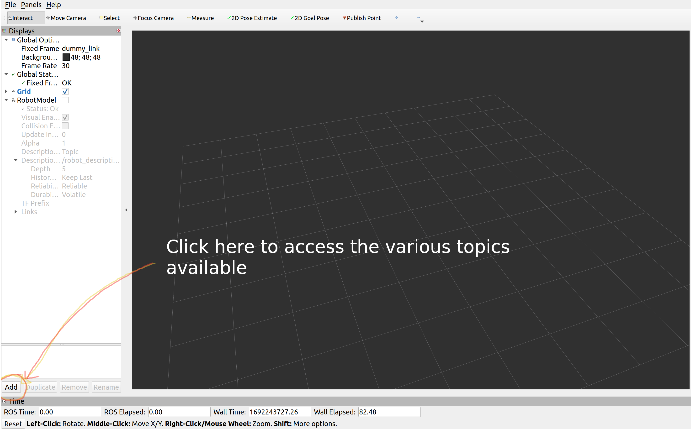
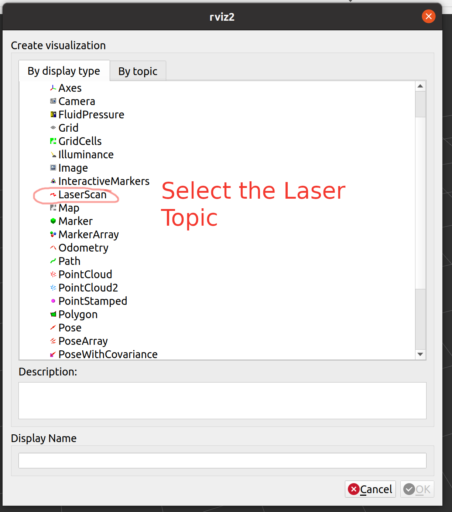
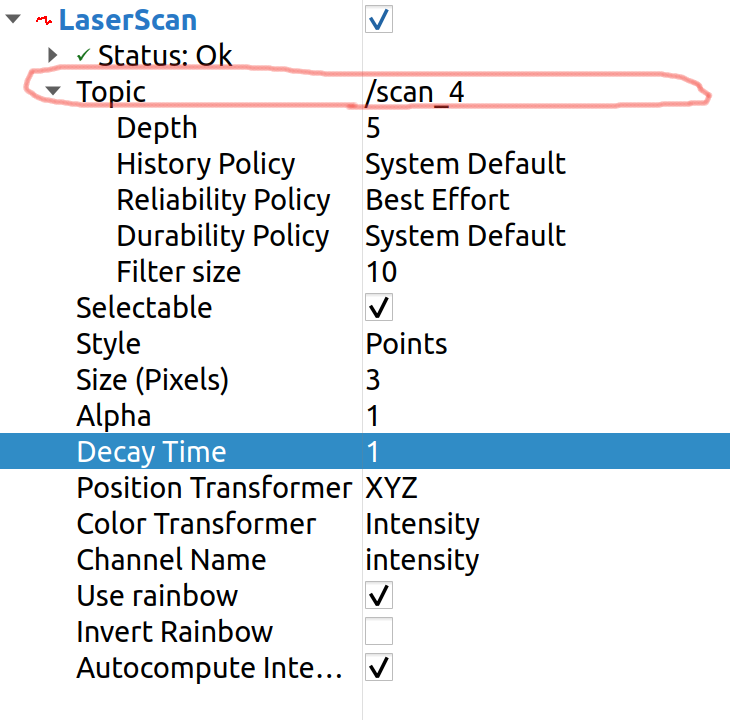

Plugin
Plugins are very helpful to add sensors and actuators to your Gazebo Model. We can create custom plugins or use existing plugins that are available.
LIDAR
Here we are going to use a LIDAR plugin to sense the environment of our robot using light rays.
To add a LIDAR we will be utilizing the link that we already created for LIDAR. We will add the below code to our URDF file.
<gazebo reference="add_name_of_your_link">
<sensor name="lidar" type="ray">
<pose>0.0 0.0 0.0 0 0 0</pose>
<always_on>true</always_on>
<visualize>true</visualize>
<update_rate>5</update_rate>
<ray>
<scan>
<horizontal>
<samples>360</samples>
<resolution>1.00000</resolution>
<min_angle>0.000000</min_angle>
<max_angle>6.280000</max_angle>
</horizontal>
</scan>
<range>
<min>0.120000</min>
<max>3.5</max>
<resolution>0.015000</resolution>
</range>
<noise>
<type>gaussian</type>
<mean>0.0</mean>
<stddev>0.01</stddev>
</noise>
</ray>
<plugin name="scan" filename="libgazebo_ros_ray_sensor.so">
<ros>
<remapping>~/out:=scan</remapping>
</ros>
<output_type>sensor_msgs/LaserScan</output_type>
<frame_name>add_name_of_your_link</frame_name>
</plugin>
</sensor>
</gazebo>
Build your project and use the Launch script to start RVIZ 2.
Click on the Add button on the bottom left corner of the screen.
{kind=link}
Select the LaserScan topic from the list.
{kind=link}
Use the following configurations for Laser Scanner to work. You can make changes once you are comfortable. Make sure you change the topic name to the topic of your laser scanner.
{kind=link}
IMU
In order to implememt the closed loop controller we need a feedback from our robot. This feedback will be the orientation of the robot. To get the orientation of the robot we will be adding an IMU sensor to the robot.
Add the folowing line to robot_name.urdf.xacro file. Make sure you edit the highlighted lines.
<gazebo reference="name_of_the_base_link">
<gravity>true</gravity>
<sensor name="imu_sensor" type="imu">
<always_on>true</always_on>
<update_rate>100</update_rate>
<visualize>true</visualize>
<topic>__default_topic__</topic>
<plugin filename="libgazebo_ros_imu_sensor.so" name="imu_plugin">
<topicName>imu</topicName>
<bodyName>name_of_the_base_link</bodyName>
<updateRateHZ>10.0</updateRateHZ>
<gaussianNoise>0.0</gaussianNoise>
<xyzOffset>0 0 0</xyzOffset>
<rpyOffset>0 0 0</rpyOffset>
<frameName>name_of_the_base_link</frameName>
<initialOrientationAsReference>false</initialOrientationAsReference>
</plugin>
<pose>0 0 0 0 0 0</pose>
</sensor>
</gazebo>
Build and Run the project and you should be able to see imu topic in the topic list. Use the information provided in this topic as a feedback for you robot.
Vacuum Gripper
To add a Vacuum Gripper to your robot manipulator, you can use the similar approach used for adding the plugins to your robot. This plugin is provided to us by gazebo_plugins so make sure you have the package installed.
Add the folowing line to robot_name.urdf.xacro file.
<gazebo>
<plugin name='vacuum_gripper' filename='libgazebo_ros_vacuum_gripper.so'>
<!-- This part can be commented out if not required -->
<ros>
<!-- Add a namespace -->
<namespace>/demo</namespace>
<!-- Remapping service and topic names -->
<remapping>switch:=custom_switch</remapping>
<remapping>grasping:=custom_grasping</remapping>
</ros>
<!-- Link associated with gripper -->
<link_name>link</link_name>
<!-- Max distance to attract entities -->
<max_distance>10.0</max_distance>
<!-- List of entities to be not attracted by the gripper -->
<fixed>ground_plane</fixed>
<fixed>wall</fixed>
</plugin>
</gazebo>
Build and Run the project and you should be able to see /namespace/switch service in the service list.
Use the below command to get the service list
ros2 service list
Use the below command to get the switch on the gripper
ros2 service call /vacuum_gripper/switch std_srvs/srv/SetBool data:\ true
Use the below command to get the switch off the gripper
ros2 service call /vacuum_gripper/switch std_srvs/srv/SetBool data:\ false
Python script
#!/usr/bin/env python3
import sys
from std_srvs.srv import SetBool
import rclpy
from rclpy.node import Node
class MinimalClientAsync(Node):
def __init__(self):
super().__init__('minimal_client_async')
self.cli = self.create_client(SetBool, '/vacuum_gripper/switch')
while not self.cli.wait_for_service(timeout_sec=1.0):
self.get_logger().info('service not available, waiting again...')
self.req = SetBool.Request()
def send_request(self, status):
self.req.data = status
self.future = self.cli.call_async(self.req)
rclpy.spin_until_future_complete(self, self.future)
return self.future.result()
def main():
rclpy.init()
minimal_client = MinimalClientAsync()
status = True
response = minimal_client.send_request(status)
minimal_client.destroy_node()
rclpy.shutdown()
if __name__ == '__main__':
main()
Odometry
We use the odometry plugin to get the position and velocity of a link with respect to the stationary world frame. Once you add the plugin you will have two topics available /odom and /velocity. The /odom topic will have the pose and orientation of the link. The /velocity topic will have the linear and angular velocities of the link.
This plugin is provided to us by odometry package so make sure you have the package installed.
Package Installation Guide lines:
Move to ~/workspace/src
Run the below command to download the odometry package.
svn export https://github.com/shantanuparabumd/ENPM-662-Introduction-to-Robot-Modelling.git/trunk/templates/plugin/odometry
Build the workspace and source.
Plugin Usage Guideline:
Add the folowing line to robot_name.urdf.xacro file.
<gazebo>
<plugin filename="libodometry_plugin.so" name="odometry_plugin">
<!-- Name of the link for which the odometry is required -->
<frame>blade_link</frame>
<!-- Any arbitray name for the world frame -->
<world_frame>fixed_world</world_frame>
</plugin>
</gazebo>
Build and Run the project and you should be able to see /odom and :guilabel:`/velocity ` service in the topic list.
Use the below command to get the service list
ros2 topic list
Use the below command to echo the topic and also can write a subscriber to get the topic data
ros2 topic echo /odom
ros2 topic echo /velocity
Drone Plugin
Note
The plugin does not ensure a perfect flight and you will need to write a PID control loop.
Tuning will be required for Thrust and Torque for links to move.
These depend upon the weight of each link and the robot.
As many of you are trying to implement the drones in your project. Here is a plugin that will help you ease up things. Once you add the plugin you will have two topics available for subscription /drone_pose and /drone_velocity. And one topic for publishing the motor speeds /motor_speed The /odom topic will have the pose and orientation of the link. The /velocity topic will have the linear and angular velocities of the link.
This plugin is provided to us by drone_plugin package so make sure you have the package installed.
Package Installation Guide lines:
Move to ~/workspace/src
Run the below command to download the drone_plugin package.
svn export https://github.com/shantanuparabumd/ENPM-662-Introduction-to-Robot-Modelling.git/trunk/templates/plugin/drone_plugin
Build the workspace and source.
Plugin Usage Guideline:
Add the folowing line to robot_name.urdf.xacro file.
<gazebo>
<plugin name="drone_plugin" filename="libdrone.so">
<!-- Name of the base/body link of the drone to compute odometry -->
<drone_frame>base_link</drone_frame>
<updateRate>100</updateRate>
<!-- Keep this true if you want to visualize transforms for RViz -->
<publishTf>true</publishTf>
<!-- Adjust the coefficient according to need -->
<rotorThrustCoeff>0.00025</rotorThrustCoeff>
<rotorTorqueCoeff>0.0000074</rotorTorqueCoeff>
</plugin>
</gazebo>
The rotorThrustCoeff and rotorTorqueCoeff are critical as they decide the amount of Thrust and Torque generated as follows:
Thrust = rotorThrustCoeff * motor_speed
Torque = rotorTorqueCoeff * motor_speed
Build and Run the project and you should be able to see /motor_speed , /drone_pose and /drone_velocity service in the topic list.
Use the below command to get the topic list
ros2 topic list
Use the below command to echo the topic and also can write a subscriber to get the topic data
ros2 topic echo /drone_pose
ros2 topic echo /drone_velocity
Use the below command for publishing motor speeds.
ros2 topic pub /motor_speed drone_plugin/msg/MotorSpeed "{name: ['link1','link2','link3'], velocity: [5000.0,5000.0,5000.0]}"
You can change the number of links according to robot model.
Here is a small script to publsih to motor speed topic.
#!/usr/bin/env python3
import rclpy
from rclpy.node import Node
from drone_plugin.msg import MotorSpeed # CHANGE
class MinimalPublisher(Node):
def __init__(self):
super().__init__('minimal_publisher')
self.publisher_ = self.create_publisher(MotorSpeed, '/motor_speed', 10) # CHANGE
timer_period = 0.5
self.timer = self.create_timer(timer_period, self.timer_callback)
self.i = 0
def timer_callback(self):
msg = MotorSpeed() # CHANGE
msg.name = ['blade_link']
msg.velocity = [10.0] # CHANGE
self.publisher_.publish(msg)
self.get_logger().info('Publishing:') # CHANGE
self.i += 1
def main(args=None):
rclpy.init(args=args)
minimal_publisher = MinimalPublisher()
rclpy.spin(minimal_publisher)
minimal_publisher.destroy_node()
rclpy.shutdown()
if __name__ == '__main__':
main()